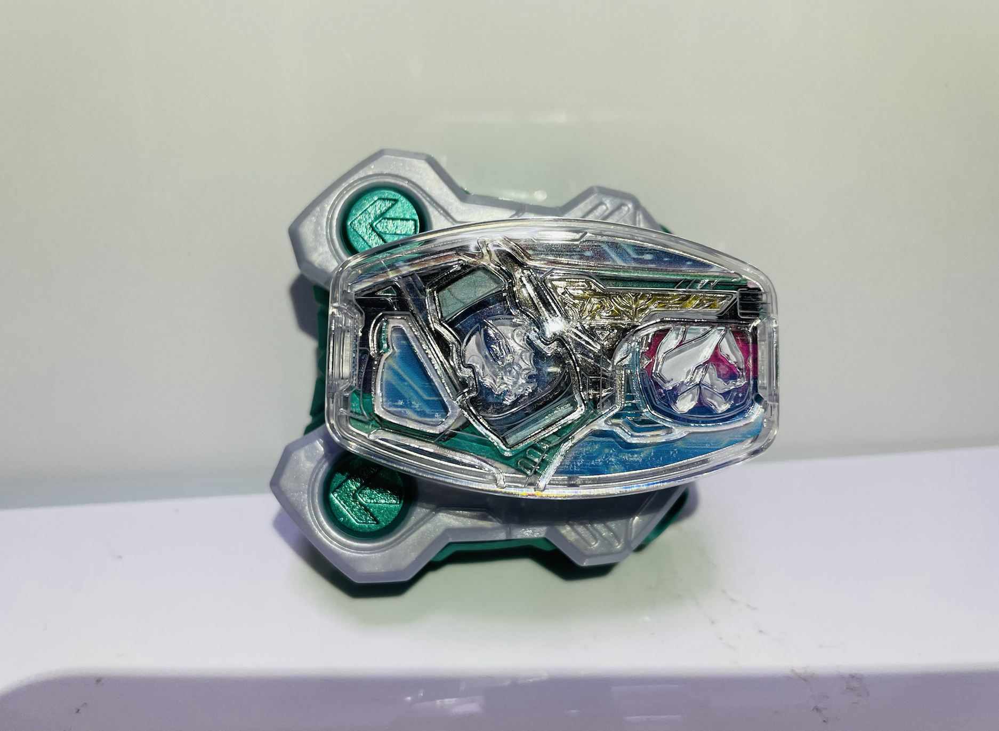
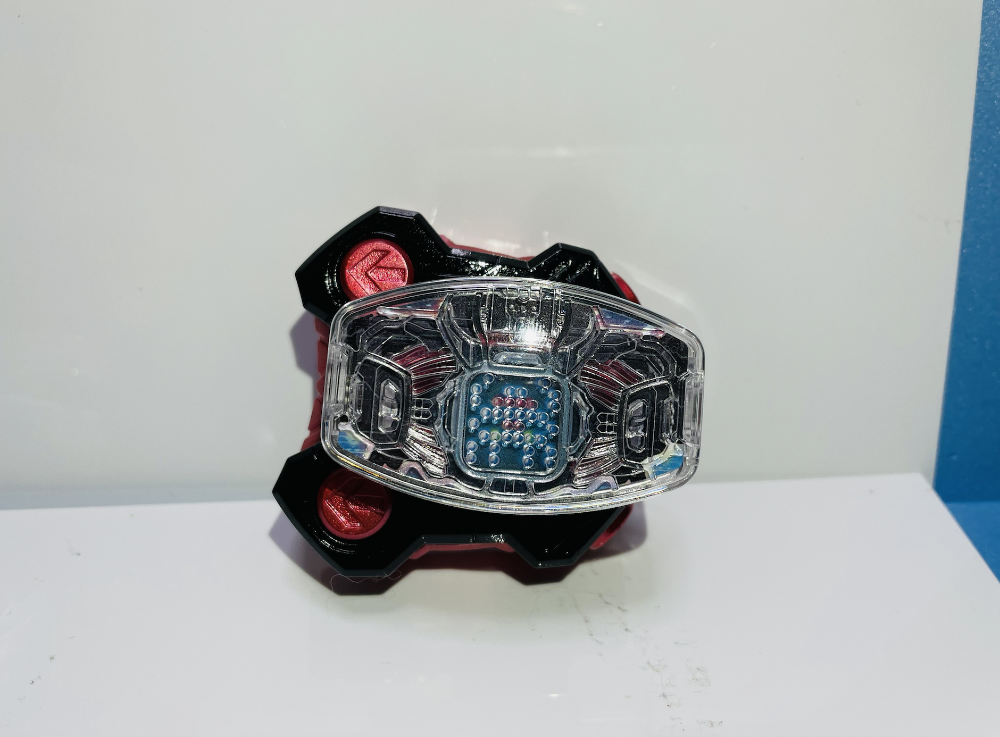

レイズバックル塗装
今回はガチャガチャ限定のレイズバックルを塗装したので使った塗料を紹介したいと思います。


裏面


白い方：ツーサイドライバーレイズバックル
白 Mr.カラー ホワイトパール
緑 GX メタルグリーン (メタリック) (GX-205)
赤い方：デモンズドライバーレイズバックル
赤 Mr.メタリックカラー GX202 GXメタルレッド
黒 ガイアノーツ Exシリーズ Ex-02 Ex-ブラック